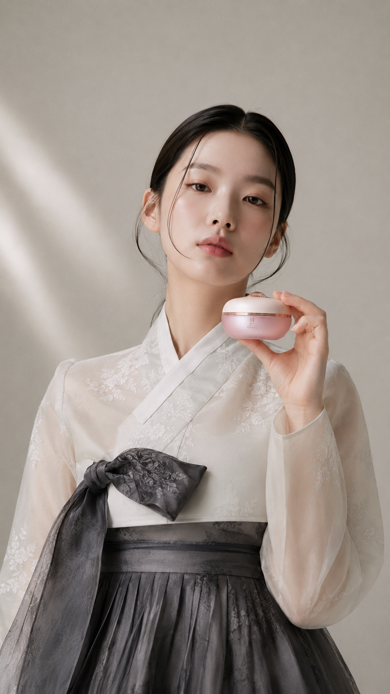

상황버섯추출물 함유
피부를 밝고 깨끗하게 정돈하는 한방 핵심 성분으로 본연의 광채를 끌어올립니다.

YEGYUL LINE
SIBJANGSAENG YEGYUL
산뜻한 텍스처로 밝고 맑은 피부를 만들어가다
상황버섯추출물이 피부를 밝고 맑고 깨끗하게 가꾸는 데 도움을 주는 한방 기초 라인입니다. 가볍고 산뜻한 텍스처와 고보습 텍스처 두 가지 타입으로 구성되어 피부 타입에 맞는 맞춤 케어가 가능하며, 일상의 기초 케어를 편안하고 효과적으로 완성합니다.
피부를 밝고 깨끗하게 정돈하는 한방 핵심 성분으로 본연의 광채를 끌어올립니다.
산뜻한 타입과 깊은 보습 타입 중 피부 타입과 계절에 맞게 선택할 수 있습니다.
피부 톤을 균일하게 정돈하고 칙칙함을 개선해 맑고 환한 피부 결을 만들어 줍니다.
가볍고 산뜻하게 흡수되어 매일 부담 없이 사용할 수 있는 데일리 한방 스킨케어입니다.
피부 톤이 칙칙하고 불균일해 맑은 피부 결을 원하시는 분
산뜻하고 가벼운 사용감의 한방 기초 제품을 선호하시는 분
일상의 미백·보습 케어를 간편하고 효과적으로 하고 싶은 분